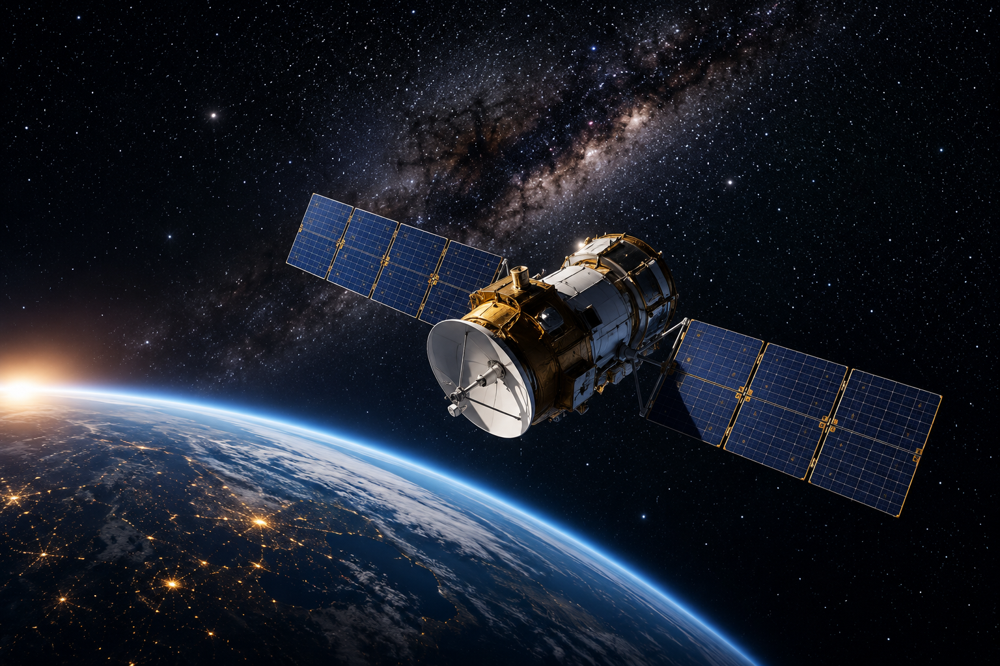

Τεχνητοί Δορυφόροι 🛰️🌍
Οι τεχνητοί δορυφόροι περιφέρονται σε σταθερή τροχιά γύρω από τη Γη χάρη στη κεντρομόλο δύναμη που παρέχει η βαρύτητα.
Πού χρησιμεύουν;
• Τηλεπικοινωνίες & Ίντερνετ στις πιο απομακρυσμένες περιοχές.
• Εγκαίρη ανίχνευση πυρκαγιών και παρακολούθηση της κλιματικής αλλαγής.
• Πρόγνωση καιρού και παρακολούθηση καταιγίδων/τυφώνων.
• Συστήματα Πλοήγησης (GPS) για αεροπλάνα, πλοία και οχήματα.
Κάθε σώμα με μάζα δημιουργεί γύρω του βαρυτικό πεδίο. Ο νόμος του Νεύτωνα: F = G(M·m)/r²
Για κυκλική τροχιά, η απαιτούμενη ταχύτητα είναι: v = √(GM/r)
Είστε αστροφυσικός στη NASA και σας αναθέτουν να βάλετε ένα δορυφόρο σε τροχιά σε απόσταση r1 από το κέντρο της Γης. Ποια η ταχύτητα v1 που πρέπει να έχει; (Θεωρούμε G=1 και M γνωστό).
(Υπόδειξη: Η ρίζα γράφεται ως (...)^1/2)